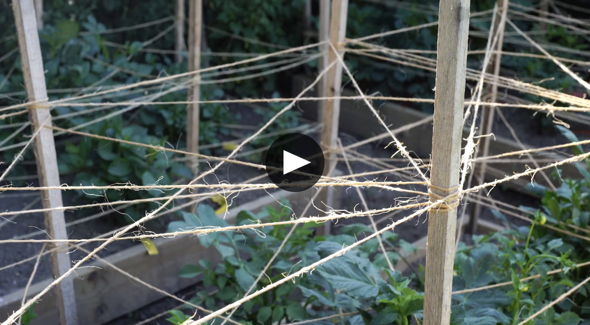

|
Hello dahlia friends!
Our very first in person club meeting is in the
books! It was wonderful to see so many of you at
Maplebrook Farmstead in July. Thank you again to
our wonderful presenters Joel Betts of Worcester
County Conservation District and Vee Maclean
from Best Buds Worm Castings for sharing their
time and expertise. It truly was an afternoon
packed with valuable information in beginning to
understand your soil, how to take a proper soil
sample and the importance of soil testing before
adding amendments in your garden.
We couldn’t have done it without Nancy and her
family opening up Maplebrook Farmstead to us. We
look forward to coming back in October. Thank
you!!
We are enjoying the summer days as they fly by.
We’ve been working both outside in the gardens
weeding and staking plants and inside on the
computer or our phones; connecting with members,
working on programming logistics, writing email
newsletters or ADS bulletins, reaching out to
connect with club Presidents and Vice Presidents
in the ADS North Atlantic Regional Conference,
posting on social media and creating new landing
pages on our website. We are enjoying every
minute of it and were especially thrilled to
have the opportunity on August 11 to give a
presentation at the Woburn Senior Center on the
history and growing of dahlias, followed by a
look at the dahlia garden. Woburn Senior Center
is one of our Y.D.S. Growing Partners, growing
approximately 140 dahlia plants for seniors and
the public to enjoy. Did you see photos of the
new picket fence at Wright Locke Farm? It looks
great and most importantly is functional with a
beautiful gate access into the garden.
Finally after such a rainy July it’s so exciting
to see the posts on both Facebook and Instagram
as everyone's blooms are starting to explode.
Mark your calendars as local dahlia club shows
are scheduled through September. The next one is
hosted by the Connecticut Dahlia Society on
Saturday, August 28th in Hartford, CT. Carol and
I have dates saved on our calendar to go and
participate in as many as we can. Let us know if
anyone plans to attend or have questions. In the
meantime, we also hope to see you at the next
meeting on Sunday, August 29th with some of your
blooms and for a potluck bbq.
– Misty & Carol
|
|

Dahlias from the Garden of YDS Member
Andrea Campbell
Photography by: Andrea Campbell
Pictured above 2nd Row (Left to Right):
Seedling, Peaches and Cream, Myrtle's Folly
and Star Child, Seedling
Andrea was the first person to join Y.D.S. when
we opened up membership on the very first day of
our launch! We are thrilled to have her as part
of our club. Andrea gardens in raised beds on a
.25 acre suburban lot in Woburn. It has been a
pleasure to get to know Andrea over the past few
months, following along her gardening posts on
Instagram.
“This year I started with 50 tubers (lost a few
along the way) and about 30 seedlings. I've
always had a few dahlias in my garden but it
wasn't until we moved to this house that I had
room to plant more. So a few turned into 10 or
15 and then 30 last year and now...over 70 (with
my seedlings) this year. I may have got a bit
carried away!
My mother loved to garden and she always grew a
few dahlias. I mostly added them to my garden so
she and I could enjoy them together. She's gone
now but I always feel close to her in my garden
and especially in my dahlia patch.”
We love seeing photos Andrea shares of her
dahlias and we are eager to see which of her new
seedlings she will decide to keep and grow from
tubers next year. It’s fun to see our members
try new ways of propagating dahlias and we can’t
wait to see what all of you will do in your
gardens to grow your very own new varieties!
|
|

2021 Photo Contest
Take pictures of your Y.D.S. Cornel bloom.
Photo Contest Rules:
- Photo Contest open to Y.D.S. members
- Dahlia must be grown in 2021
-
Photo Submission must be taken by Y.D.S.
member
-
Photo must be taken between August 19 -
November 1, 2021
-
Photos must be submitted by Nov 30, 2021
-
One winner per category to be selected by
members voting.
- Winners will be announced in December
-
Each Category winner will receive a prize and
a select tuber from our YDS 2022 sale
-
All photographs will be credited with the name
of the photographer along with a link to their
social media and the photographer retains the
copyright to the image
-
All photo submissions by the photographer
automatically allows permission for Y.D.S. to
reproduce or share the photo for marketing
publications in print and online. All photos
will be credited at each use.
Category 1: Cornel Flower Arrangement
Category 2: Cornel Handful (with more
than 1 bloom)
Category 3: Cornel Selfie
How to share your images:
Post your photos on FB or IG and don’t forget to
use #YDS2021 Email your pictures to
info@yankeedahliasociety.com
Text them to Misty or Carol
|
|
Our Next Meeting

Photo: Misty’s Garden
"Garden Walk, Summer Potluck BBQ & Reading the
ADS Classification Book and learning What makes
a dahlia bloom show quality"
Join us for our first annual summer afternoon
potluck BBQ and a tour of the garden. Sign up to
bring a dish to share as we chat about the
growing season. In preparation for the local
dahlia shows we will review the American Dahlia
Society Classification Handbook. Remember to
bring along your ADS Classification Handbook*
and a bucket full of your dahlia blooms and we
will discuss the varieties and what makes a show
quality bloom. If this will be your first year
attending a local dahlia show this will be a
great opportunity to understand the color, form
and size codes and what you’ll need to know
before arriving.
Sunday, August 29th, 3:00 pm – 5:00
pm
Location: Misty Florez’s
Garden, 52 Lake Avenue, Woburn, MA 01801
Rain or Shine: We will have
cover in case of rain
Details: Y.D.S will supply the
grilled chicken, sliders, hot dogs and
vegetarian option. Please RSVP on SignUp Genius
and sign up to bring a dish to share. Remember
to bring your folding chair and a few of your
dahlia blooms to share and discuss.
Parking: at Horn Pond right
across from the Horn Pond Apartments. Misty's
house is across the street. We'll meet in the
backyard.
*Not required. If you don’t have an ADS
Classification Book and would like one, please
email us with a subject line: ADS
Classification Book. Books are $5.00/each. *We
have a few extra copies.
RSVP: Requested but not
required - Sign Up Genius Link Below
Sign Up Link: https://www.signupgenius.com/go/10C0C44AFA82DA5FAC16-garden
|
|
Subscribe to our YouTube Channel
video library is growing. We have several dahlia
video tutorials on YouTube and need your help to
get an official Yankee Dahlia Society Channel.
In order to qualify we need 100 subscribers. We
hope everyone will take a moment to
subscribe to our channel.
|
|
Our Latest Video

How to wrap twine to support your growing dahlia
plants
|
|

Y.D.S. Growing Partners Introduction
Grounded Flower Farm (New Entry Incubator Farm
in Beverly, MA)
By Misty Florez and Carol Palmer
New Entry Sustainable Farming Project is an
initiative program through Tufts University
School of Nutrition and Science that began over
20 years ago. The original mission has roots in
supporting farmers and offering them
opportunities to gain knowledge and experience
through their support and partnerships. The
foundation of both classroom work covering
subjects ranging from exploring farming, crop
production and farm business planning, and
hands-on training is key to success.
Grounded Flower Farm is the dream realized by
Emily Round. There is something special about
that entrepreneurial spirit that drives each
small business owner and Emily Round has a
talent and flair for growing ethically and
ecologically sourced flowers to sell to her
community. A background studying Biology and
Environmental Science at UMass Amherst and a
passion for the climate and her own impact on
the environment gives her a unique opportunity
to make a difference in her community at the
local level. Growing up in her family garden was
where it all started and often you’ll spot
Emily’s father right there alongside her as a
helping hand on her farm. In 2018 Emily went
through New Entry’s program courses helping her
to pursue her dream of owning her own business.
She is currently in her 3rd year on ¾ acre
running her own successful flower farm offering
CSA shares to the public and flowers to the
floral community.
The Yankee Dahlia Society Growing Partnership
with Emily is so valuable in supporting her
success with Grounded Flower Farm and equally
important to the future funding for Y.D.S. 450
tubers from Y.D.S.’s initial stock, worth an
estimated $2,925.00 are currently being grown on
part of Emily’s farm. The income from the sale
of the blooms produced contributes to Emily’s
business success, while the tubers to be
harvested in the fall and sold through the club
tuber sale will contribute to the financial
success of Y.D.S. As members of Yankee Dahlia
Society, your memberships, donations and
purchases, as well as your participation in
volunteering to help where help is needed are
all vital to the success of your club, so we can
bring great programs and speakers and other
educational opportunities to all.
To learn more about New Entry and Grounded
Flower Farm check out their website and follow
them on social media
Follow New Entry Sustainable Farming Project:
Their Website,
Facebook, or
Instagram
Follow Grounded Flower Farm:
Their Website,
Facebook, or
Instagram
|
|
Dahlia Tip
Disbudding Your Growing Plants

Dahlias typically send out bud clusters, a
central or terminal bud and two (occasionally
one) smaller side or axillary buds. Disbudding
involves removing the two axillary buds leaving
only the terminal bud. This allows the plant to
develop a larger bloom with a longer stem. It is
ideal to remove the side buds just as they are
beginning to develop so there is minimal
scarring. Even if you are not showing your
blooms in an exhibit this practice will improve
the size and the quality of your blooms and
result in longer and stronger stems.
|
|
Business Members

We are proud to have so many Business members
We are proud to have so many Business members.
Our Business members bring their unique talents
and resources to our communities, each of their
backgrounds so inspiring as we get to know them.
We are thrilled to support them and their
businesses and excited to list them on our
website. We invite and hope everyone will start
to introduce themselves on social media. Not to
mention we all like dahlias and it’s a wonderful
way to connect our community of dahlia growers
and show our support for our small business
entrepreneurs.
|
|
Dahlia Shows
2021 Local Dahlia Show Schedule Information
Check out our website for a listing and links to
local shows in the North Atlantic Dahlia
Conference Region.
Click here for the Dahlia Show Schedule
|
|
Save-the-Dates
September Meeting
"Coffee, Scones, Garden Tour & Floral
Arrangement Demonstration hosted by Robin Sears
of
Robin’s Nest Designs"
Sunday, September 19, 2021
Time:
10:00 am - 12:00 noon
Rain Dates:
TBD as we watch the weather
Location:
Garden of @ Y.D.S. Member Robin Sears in South
Hamilton, MA
Park at Hamilton Town Hall (577 Bay Road,
Hamilton, MA 01982) and walk down the sidewalk
block about 3 minutes/0.2 miles to Robin’s Home.
Bring your folding chair.
October Meeting
"Come see the dahlias in bloom at Maplebrook
Farmstead"
Sunday, October 3, 2021
Time:
TBD
Rain Dates:
Rain or Shine: We will have a large canopy tent
to host in case of rain.
Location:
Maplebrook Farmstead, 155 Tuttle Road, Sterling, MA 01564
|
|
|
|
|